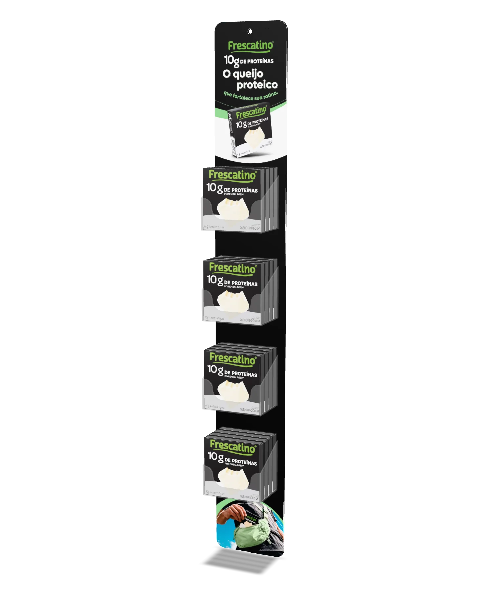
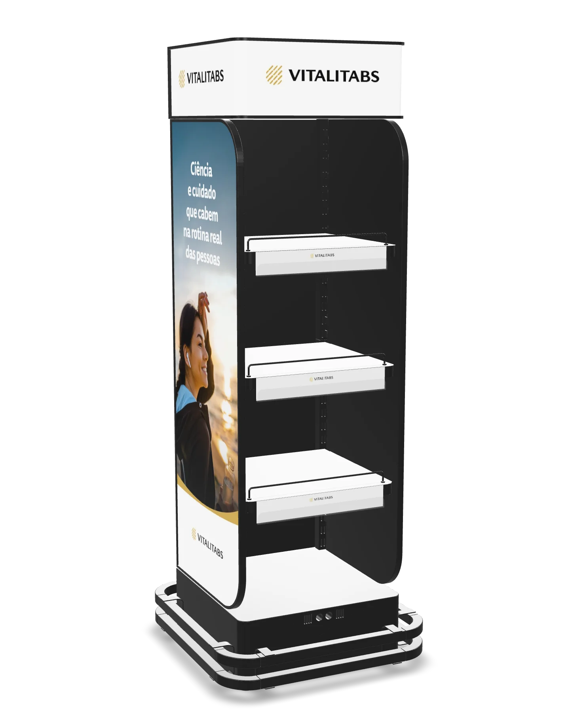
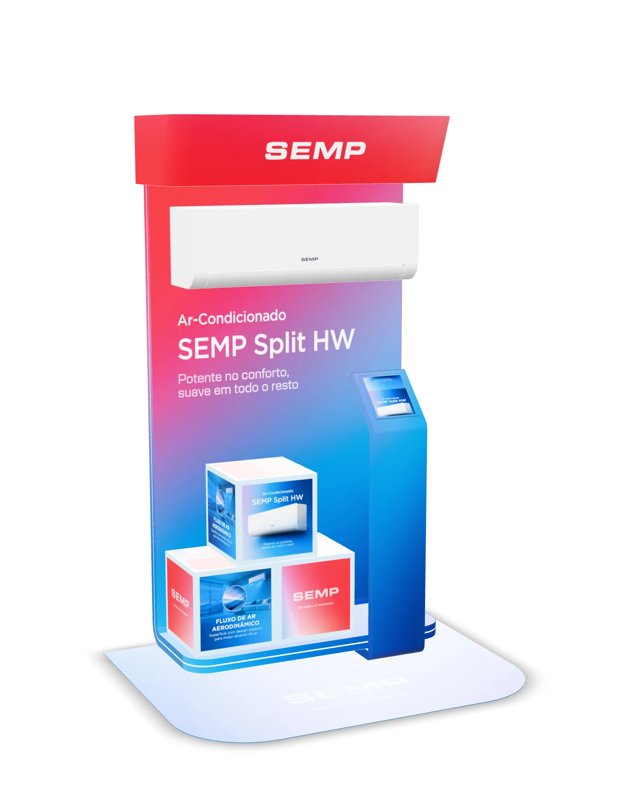

A 75 LAB transforma cada projeto de PDV em um link de realidade aumentada. Quem abre no celular vê o display, a ilha ou o estande em tamanho real, no lugar onde ele vai ficar. Isso encurta a aprovação, evita peça que não cabe e ajuda a vender o projeto para o comprador do varejo.
Como funciona
- iPhone: o link abre direto na realidade aumentada nativa do aparelho.
- Android: o link abre no visualizador de AR do Google, também sem aplicativo.
- Computador: o modelo aparece em 3D para girar, com um QR para continuar no celular.
- A peça fica em tamanho real, apoiada no chão ou presa à parede, conforme o tipo.
Para que serve no dia a dia do trade
- Aprovar sem PDF: marketing, trade e comercial veem a mesma peça em escala.
- Vender para o varejo: o comprador vê o display na própria loja antes de aceitar o espaço.
- Conferir medida: altura, profundidade e corredor, no lugar real.
- Treinar quem monta: a página de montagem mostra a peça em AR junto do passo a passo.
Projetos publicados em AR
Mais de 30 projetos da 75 LAB já foram publicados em realidade aumentada, de clip strips a estandes inteiros. Alguns que você pode abrir agora:




Seu display em AR em 48 horas úteis, sem custo
Para indústrias que querem ver como funciona: mande pelo WhatsApp as medidas do produto e a ideia do display. Em até 48 horas úteis devolvemos o link do display em realidade aumentada para você abrir na loja. Uma peça por marca, sem compromisso de contratação.
Perguntas frequentes
Precisa instalar aplicativo para ver o display em realidade aumentada?
Não. O link abre no navegador do iPhone e do Android e usa o AR nativo de cada sistema. No computador, aparece o 3D com um QR para abrir no celular.
O display aparece em tamanho real?
Sim. A peça abre em escala real, apoiada no chão ou presa à parede. Em estandes grandes dá para reduzir com o gesto de pinça e voltar ao tamanho real.
Preciso ter o modelo 3D?
Não. Se a marca já tem o arquivo 3D, nós o preparamos para AR. Se não tem, o modelo nasce no projeto da 75 LAB.
Em iPhones mais novos parte do display some atrás de objetos. É defeito?
Não. iPhones com sensor LiDAR escondem a peça virtual atrás de objetos reais, como uma pessoa ou uma caixa, e isso não pode ser desligado. Basta liberar o espaço na frente da câmera.